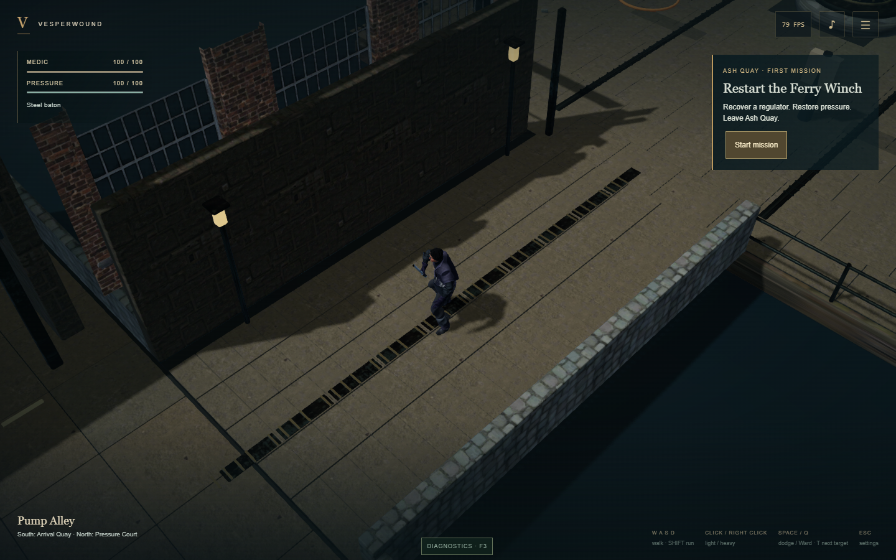
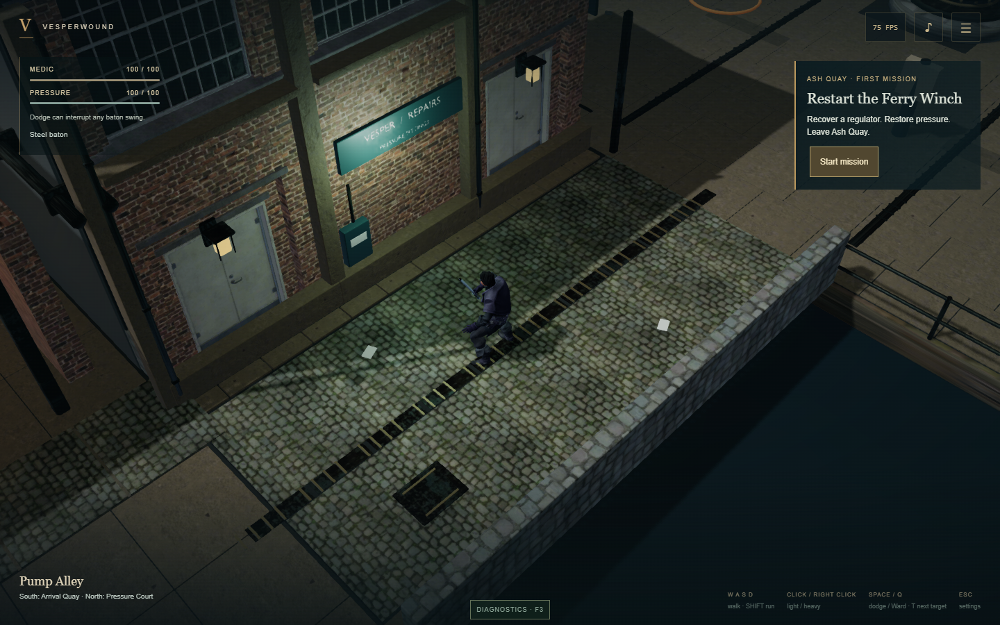

Ash Quay — Dockside visual proof
Matched gameplay-camera captures from the accepted main branch and the Milestone A proof. Medic, collision, combat, mission and camera remain the same. The proof adds complete workshop and warehouse facades, recessed doors, wet cobbles, loading detail and route lighting.
Before — main 311d88b
After — chapter-art-proof / WebGPU
These are actual browser captures, not concept renders. Character pose, FPS and contextual hint timing vary. WebGL2 and mobile captures, traversal recordings and technical results are supplied alongside this review. The warehouse interior and expanded district belong to later milestones.
WebGPU traversal recording · WebGL2 recording · Mobile controls recording · Validation report
Review: Does the street read as a working dock? Is BONDED / 03 an understandable landmark? Can you see Medic and nearby threats beneath the canopy? Are the surfaces and lighting a sufficient improvement to apply across the chapter?